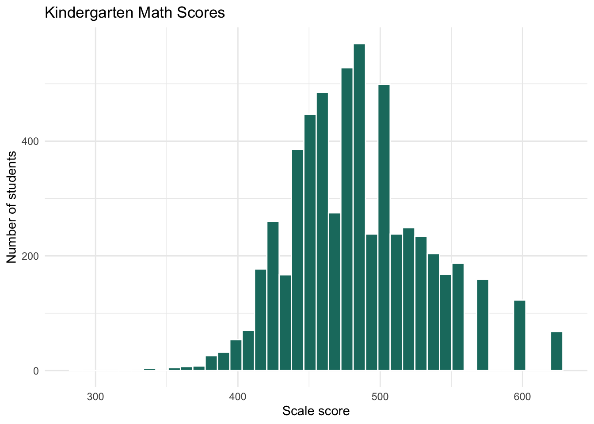

Warning: package 'lme4' was built under R version 4.5.2Warning: package 'lmerTest' was built under R version 4.5.2Warning: package 'performance' was built under R version 4.5.2Warning: package 'modelsummary' was built under R version 4.5.2Data for this chapter: projectSTAR.dta
Copy projectSTAR.dta into this project folder before rendering.
Real data often nest more than two levels deep. Students sit in classrooms, classrooms sit in schools, and each layer can contribute its own variation. This chapter uses the Tennessee Class Size Experiment, with more than 6,000 kindergarten students nested in classrooms nested in over 200 schools.
Warning: package 'lme4' was built under R version 4.5.2Warning: package 'lmerTest' was built under R version 4.5.2Warning: package 'performance' was built under R version 4.5.2Warning: package 'modelsummary' was built under R version 4.5.2Rows: 6,325
Columns: 27
$ stdntid <dbl> 10001, 10133, 10246, 10263, 10266, 10275, 10281, 10282, …
$ race <dbl+lbl> 1, 2, 1, 2, 1, 1, 1, 1, 1, 1, 1, 1, 2, 1, 1, 1, 1, 1…
$ gender <dbl+lbl> 1, 1, 2, 2, 1, 1, 1, 1, 2, 1, 1, 1, 1, 1, 2, 1, 2, 2…
$ FLAGSGK <dbl+lbl> 1, 1, 1, 1, 1, 1, 1, 1, 1, 1, 1, 1, 1, 1, 1, 1, 1, 1…
$ flaggk <dbl+lbl> 0, 1, 1, 1, 1, 1, 1, 1, 1, 1, 1, 1, 1, 1, 1, 0, 1, 1…
$ gkclasstype <dbl+lbl> 3, 3, 3, 1, 2, 3, 1, 3, 1, 2, 3, 3, 2, 3, 3, 3, 1, 2…
$ gkschid <dbl> 169229, 169280, 218562, 205492, 257899, 161176, 189382, …
$ gksurban <dbl+lbl> 2, 2, 4, 2, 3, 3, 2, 2, 3, 3, 3, 2, 2, 2, 2, 3, 3, 3…
$ gktchid <dbl> 16922904, 16928003, 21856202, 20549204, 25789904, 161176…
$ gktgen <dbl+lbl> 2, 2, 2, 2, 2, 2, 2, 2, 2, 2, 2, 2, 2, 2, 2, 2, 2, 2…
$ gktrace <dbl+lbl> 2, 1, 1, 1, 1, 1, 1, 1, 1, 1, 1, 1, 1, 2, 1, 1, 1, 1…
$ gkthighdegree <dbl+lbl> 2, 2, 3, 2, 3, 2, 3, 3, 3, 3, 2, 2, 3, 2, 2, 2, 2, 2…
$ gktcareer <dbl+lbl> 4, 4, 4, 4, 4, NA, 4, 4, 4, 4, 4, 4, 4, …
$ gktyears <dbl> 5, 7, 8, 3, 12, 2, 7, 14, 4, 6, 11, 16, 12, 5, 17, 10, 6…
$ gkclasssize <dbl> 24, 22, 17, 17, 24, 24, 13, 24, 14, 23, 23, 22, 20, 24, …
$ gkfreelunch <dbl+lbl> 2, 2, 2, 1, 2, 2, 2, 1, 1, 2, 2, 2, 2, 2, 2, 2, 1, 2…
$ gkrepeat <dbl+lbl> 1, 1, 1, 1, 1, 1, 1, 1, 1, 1, 1, 1, 1, 1, 1, 1, 1, 1…
$ gkspeced <dbl+lbl> 2, 2, 2, 2, 2, 2, 2, 2, 2, 2, 2, 2, 2, 2, 2, 2, 2, 2…
$ gkspecin <dbl+lbl> 2, 2, 2, 2, 2, 2, 2, 2, 2, 2, 2, 2, 1, 2, 2, 2, 2, 2…
$ gkpresent <dbl> 161, 175, 132, 178, 170, 94, 160, 154, 172, 95, 163, 172…
$ gkabsent <dbl> 19, 5, 28, 2, 10, 3, 2, 7, 8, 2, 17, 8, 0, 31, 7, NA, 20…
$ gktreadss <dbl> NA, 427, 450, 483, 456, 411, 443, 448, 463, 472, 428, 54…
$ gktmathss <dbl> NA, 478, 494, 513, 513, 468, 473, 449, 520, 536, 484, 62…
$ gktlistss <dbl> NA, 509, 549, 554, 520, 571, 595, 540, 565, 595, NA, 622…
$ gkwordskillss <dbl> NA, 418, 444, 431, 468, 396, 444, 444, 480, 486, 423, 52…
$ gkmotivraw <dbl> 23, 24, 28, 27, 25, 24, NA, NA, 26, 27, 24, 24, 23, 28, …
$ gkselfconcraw <dbl> 52, 53, 56, 61, 54, 55, NA, NA, 52, 61, 55, 49, 49, 59, …ggplot(star, aes(x = gktmathss)) +
geom_histogram(bins = 40, fill = "#1a7a6e", color = "white") +
labs(title = "Kindergarten Math Scores",
x = "Scale score", y = "Number of students") +
theme_minimal()Warning: Removed 454 rows containing non-finite outside the scale range
(`stat_bin()`).
Two syntaxes produce the same model. The nesting shorthand is compact:
Linear mixed model fit by maximum likelihood . t-tests use Satterthwaite's
method [lmerModLmerTest]
Formula: gktmathss ~ 1 + (1 | gkschid/gktchid)
Data: star
AIC BIC logLik -2*log(L) df.resid
60618.8 60645.5 -30305.4 60610.8 5867
Scaled residuals:
Min 1Q Median 3Q Max
-6.2037 -0.6273 -0.0635 0.5846 3.9171
Random effects:
Groups Name Variance Std.Dev.
gktchid:gkschid (Intercept) 287.6 16.96
gkschid (Intercept) 375.8 19.39
Residual 1612.4 40.15
Number of obs: 5871, groups: gktchid:gkschid, 325; gkschid, 79
Fixed effects:
Estimate Std. Error df t value Pr(>|t|)
(Intercept) 486.00 2.45 78.31 198.4 <2e-16 ***
---
Signif. codes: 0 '***' 0.001 '**' 0.01 '*' 0.05 '.' 0.1 ' ' 1The explicit form makes what is happening more visible, and is safer when classroom IDs are not unique across schools:
m_null3_alt <- lmer(gktmathss ~ 1 + (1 | gkschid) + (1 | gktchid:gkschid),
data = star, REML = FALSE)If your classroom identifier repeats across schools, for instance if every school numbers its classrooms starting at 1, the explicit syntax is required. Otherwise R will treat classroom 1 in School A and classroom 1 in School B as the same classroom.
vc <- as.data.frame(VarCorr(m_null3))
vc grp var1 var2 vcov sdcor
1 gktchid:gkschid (Intercept) <NA> 287.5884 16.95843
2 gkschid (Intercept) <NA> 375.8040 19.38566
3 Residual <NA> <NA> 1612.3949 40.15464tau_class <- vc$vcov[grepl("gktchid", vc$grp)]
tau_school <- vc$vcov[vc$grp == "gkschid"]
sigma2 <- vc$vcov[vc$grp == "Residual"]
total <- tau_class + tau_school + sigma2
round(c(
student = sigma2 / total,
classroom = tau_class / total,
school = tau_school / total
), 3) student classroom school
0.708 0.126 0.165 These three proportions sum to one and describe where the variation in kindergarten math achievement lives. In most educational data the student level dominates, which is worth remembering when you read claims about school effects. The interesting comparison is usually between the classroom and school shares, because it speaks to whether the teacher a child draws matters more than the school they attend.
performance::icc(m_null3, by_group = TRUE)# ICC by Group
Group | ICC
-----------------------
gktchid:gkschid | 0.126
gkschid | 0.165Suppose we had modeled only students within schools, ignoring classrooms entirely.
m_null2 <- lmer(gktmathss ~ 1 + (1 | gkschid), data = star, REML = FALSE)
vc2 <- as.data.frame(VarCorr(m_null2))
vc2 grp var1 var2 vcov sdcor
1 gkschid (Intercept) <NA> 450.7584 21.23107
2 Residual <NA> <NA> 1826.3914 42.73630Compare the school-level variance in this model to the one in the three-level model. Dropping the classroom level does not make classroom variation disappear. It redistributes it, and much of it lands at whichever level remains. A researcher looking only at the two-level model would conclude that schools matter more than they do, when part of what they are seeing is teachers.
A three-level model can take predictors at any level. Here we use student self-concept, two classroom-level variables, and a school-level aggregate we compute ourselves.
star <- star |>
group_by(gkschid) |>
mutate(sch_mean_math = mean(gktmathss, na.rm = TRUE)) |>
ungroup() |>
mutate(
classtype_f = as_factor(gkclasstype),
highdeg_f = as_factor(gkthighdegree)
)
m_cond3 <- lmer(
gktmathss ~ gkselfconcraw + classtype_f + highdeg_f + sch_mean_math +
(1 | gkschid/gktchid),
data = star, REML = FALSE
)boundary (singular) fit: see help('isSingular')summary(m_cond3)Linear mixed model fit by maximum likelihood . t-tests use Satterthwaite's
method [lmerModLmerTest]
Formula: gktmathss ~ gkselfconcraw + classtype_f + highdeg_f + sch_mean_math +
(1 | gkschid/gktchid)
Data: star
AIC BIC logLik -2*log(L) df.resid
48768.2 48839.3 -24373.1 48746.2 4745
Scaled residuals:
Min 1Q Median 3Q Max
-3.7976 -0.6435 -0.0603 0.5904 4.0060
Random effects:
Groups Name Variance Std.Dev.
gktchid:gkschid (Intercept) 174.4 13.21
gkschid (Intercept) 0.0 0.00
Residual 1552.8 39.41
Number of obs: 4756, groups: gktchid:gkschid, 301; gkschid, 73
Fixed effects:
Estimate Std. Error df t value
(Intercept) -14.15268 22.09078 317.69103 -0.641
gkselfconcraw 0.43544 0.11725 4755.84428 3.714
classtype_fREGULAR CLASS -8.20633 2.35152 293.16090 -3.490
classtype_fREGULAR + AIDE CLASS -8.69961 2.35099 288.49370 -3.700
highdeg_fMASTERS -0.33621 2.10936 280.44980 -0.159
highdeg_fMASTERS + -2.37697 5.96377 275.53134 -0.399
highdeg_fSPECIALIST 19.25123 10.64910 405.76184 1.808
sch_mean_math 0.99386 0.04374 275.01868 22.724
Pr(>|t|)
(Intercept) 0.522205
gkselfconcraw 0.000206 ***
classtype_fREGULAR CLASS 0.000558 ***
classtype_fREGULAR + AIDE CLASS 0.000258 ***
highdeg_fMASTERS 0.873477
highdeg_fMASTERS + 0.690520
highdeg_fSPECIALIST 0.071381 .
sch_mean_math < 2e-16 ***
---
Signif. codes: 0 '***' 0.001 '**' 0.01 '*' 0.05 '.' 0.1 ' ' 1
Correlation of Fixed Effects:
(Intr) gkslfc c_REGC c_R+AC h_MAST h_MAS+ h_SPEC
gkselfcncrw -0.274
c_REGULARCL -0.039 0.030
c_REGULA+AC -0.059 0.027 0.479
hgh_MASTERS 0.019 -0.011 -0.072 -0.064
hg_MASTERS+ 0.021 -0.007 -0.021 0.000 0.114
h_SPECIALIS 0.003 -0.008 0.101 0.101 0.054 0.021
sch_men_mth -0.951 -0.025 -0.019 0.002 -0.043 -0.030 -0.014
optimizer (nloptwrap) convergence code: 0 (OK)
boundary (singular) fit: see help('isSingular')performance::r2(m_cond3)Warning: Can't compute random effect variances. Some variance components equal
zero. Your model may suffer from singularity (see `?lme4::isSingular`
and `?performance::check_singularity`).
Decrease the `tolerance` level to force the calculation of random effect
variances, or impose priors on your random effects parameters (using
packages like `brms` or `glmmTMB`).Random effect variances not available. Returned R2 does not account for random effects.# R2 for Mixed Models
Conditional R2: NA
Marginal R2: 0.249AIC(m_null3, m_cond3)Warning in AIC.default(m_null3, m_cond3): models are not all fitted to the same
number of observations df AIC
m_null3 4 60618.78
m_cond3 11 48768.17BIC(m_null3, m_cond3)Warning in BIC.default(m_null3, m_cond3): models are not all fitted to the same
number of observations df BIC
m_null3 4 60645.49
m_cond3 11 48839.31A note on the school mean. Computing a group average from the same outcome you are predicting and then using it as a predictor is common practice, but it deserves care. The school mean is partly composed of the very students whose scores you are modeling, which builds in a mechanical relationship. With large schools the contribution of any one student is small and the practice is generally accepted. With small clusters it can be seriously misleading.
Models this complex frequently produce singularity or convergence warnings. For these data the model still converges and returns usable estimates and standard errors. Do not ignore such warnings by reflex, but do read them as diagnostic information rather than as a verdict. A singular fit usually means one variance component is being estimated at or near zero.
A slope can vary across classrooms, across schools, or both. Fit them separately first, because asking for everything at once is the fastest route to a model that will not converge.
m_slope_class <- lmer(
gktmathss ~ gkselfconcraw + classtype_f + highdeg_f + sch_mean_math +
(1 | gkschid) + (1 + gkselfconcraw | gktchid:gkschid),
data = star, REML = FALSE
)boundary (singular) fit: see help('isSingular')ranova(m_slope_class)Warning in checkConv(attr(opt, "derivs"), opt$par, ctrl = control$checkConv, : Model failed to converge with max|grad| = 9.72245 (tol = 0.002, component 1)
See ?lme4::convergence and ?lme4::troubleshooting.Warning in checkConv(attr(opt, "derivs"), opt$par, ctrl = control$checkConv, : Model is nearly unidentifiable: very large eigenvalue
- Rescale variables?boundary (singular) fit: see help('isSingular')ANOVA-like table for random-effects: Single term deletions
Model:
gktmathss ~ gkselfconcraw + classtype_f + highdeg_f + sch_mean_math + (1 | gkschid) + (1 + gkselfconcraw | gktchid:gkschid)
npar logLik AIC LRT
<none> 13 -24369 48764
(1 | gkschid) 12 -24369 48763 0.3352
gkselfconcraw in (1 + gkselfconcraw | gktchid:gkschid) 11 -24373 48768 7.7055
Df Pr(>Chisq)
<none>
(1 | gkschid) 1 0.56263
gkselfconcraw in (1 + gkselfconcraw | gktchid:gkschid) 2 0.02122 *
---
Signif. codes: 0 '***' 0.001 '**' 0.01 '*' 0.05 '.' 0.1 ' ' 1m_slope_school <- lmer(
gktmathss ~ gkselfconcraw + classtype_f + highdeg_f + sch_mean_math +
(1 + gkselfconcraw | gkschid) + (1 | gktchid:gkschid),
data = star, REML = FALSE
)boundary (singular) fit: see help('isSingular')ranova(m_slope_school)boundary (singular) fit: see help('isSingular')
boundary (singular) fit: see help('isSingular')ANOVA-like table for random-effects: Single term deletions
Model:
gktmathss ~ gkselfconcraw + classtype_f + highdeg_f + sch_mean_math + (1 + gkselfconcraw | gkschid) + (1 | gktchid:gkschid)
npar logLik AIC LRT Df
<none> 13 -24369 48763
gkselfconcraw in (1 + gkselfconcraw | gkschid) 11 -24373 48768 8.879 2
(1 | gktchid:gkschid) 12 -24458 48940 179.171 1
Pr(>Chisq)
<none>
gkselfconcraw in (1 + gkselfconcraw | gkschid) 0.0118 *
(1 | gktchid:gkschid) <2e-16 ***
---
Signif. codes: 0 '***' 0.001 '**' 0.01 '*' 0.05 '.' 0.1 ' ' 1State what each would mean before you look at the test. A random slope at the classroom level says the relationship between self-concept and math achievement differs from teacher to teacher, perhaps because some teachers are better at reaching students who doubt themselves. At the school level it says that relationship differs across schools, which points at something more structural: tracking policies, counseling resources, school climate.
modelsummary(
list("Null (3-level)" = m_null3, "Conditional" = m_cond3),
stars = c("*" = .05, "**" = .01, "***" = .001),
gof_map = c("nobs", "aic", "bic"),
title = "Three-level models of kindergarten math achievement"
)| Null (3-level) | Conditional | |
|---|---|---|
| * p < 0.05, ** p < 0.01, *** p < 0.001 | ||
| (Intercept) | 486.000*** | -14.153 |
| (2.450) | (22.091) | |
| gkselfconcraw | 0.435*** | |
| (0.117) | ||
| classtype_fREGULAR CLASS | -8.206*** | |
| (2.352) | ||
| classtype_fREGULAR + AIDE CLASS | -8.700*** | |
| (2.351) | ||
| highdeg_fMASTERS | -0.336 | |
| (2.109) | ||
| highdeg_fMASTERS + | -2.377 | |
| (5.964) | ||
| highdeg_fSPECIALIST | 19.251 | |
| (10.649) | ||
| sch_mean_math | 0.994*** | |
| (0.044) | ||
| SD (Intercept gktchidgkschid) | 16.958 | 13.205 |
| SD (Intercept gkschid) | 19.386 | 0.000 |
| SD (Observations) | 40.155 | 39.405 |
| Num.Obs. | 5871 | 4756 |
| AIC | 60615.1 | 48751.2 |
| BIC | 60641.9 | 48822.3 |
When you write up a three-level model, report the variance partition from the null model, not just the fixed effects from the final one. Readers need to know how much room there was to explain at each level before they can judge what your predictors accomplished.